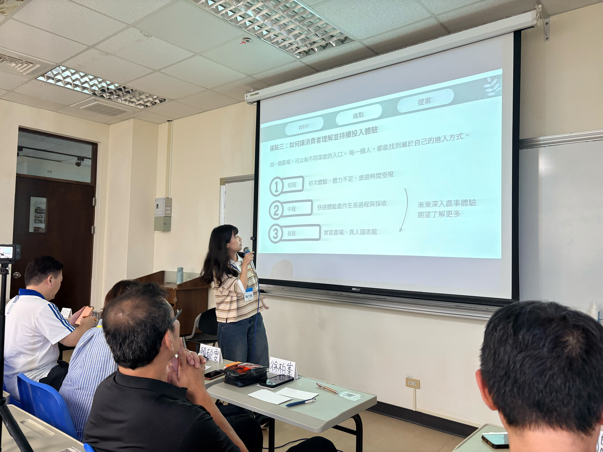
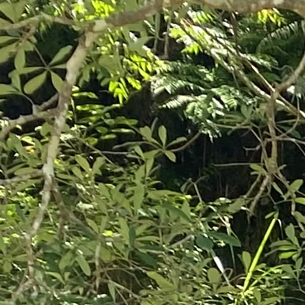
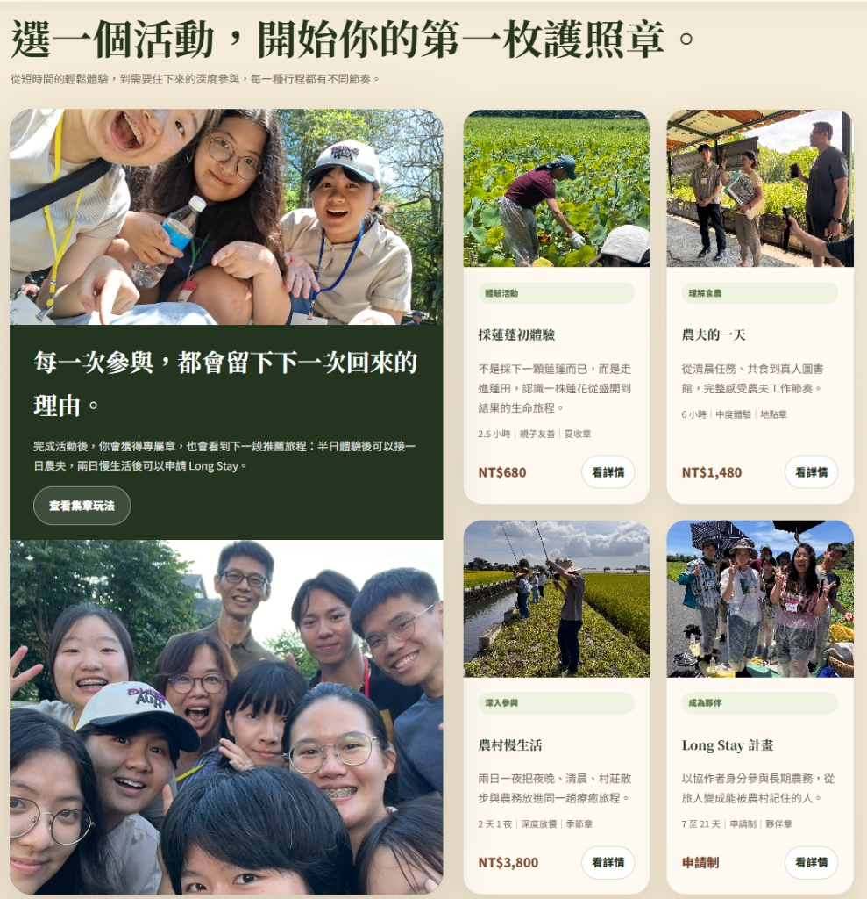

經歷了 Discover (發散探索) 的深度訪談、Define (聚焦定義) 的痛點收斂，以及 Develop (發想開發) 的創意激盪，本屆「泰拉學校—地之校」的跨國共創團隊迎來了最後的終點站——Deliver (交付落地驗證)。這一步不只是在紙面上做簡報練習，而是要將實地產出的點子做成低保真或數位原型，在員山老農、南澳青農與佛光大學專家的面前進行面對面測試，驗證方案的可行性。學員們以出色的完整度展現了四組 MVP 設計提案，為地方共創與永續食農注入了新的思維。
二、 實踐現場：員山、南澳與礁溪的風土交會
我們的實踐基地橫跨宜蘭員山阿聰自然田、南澳水月農莊以及礁溪佛光大學。以下是學員在田野調研、跨國對話以及最終發表時的代表性實況，記錄了最真實的實踐溫度：

「最終展示：學員登台進行四組 MVP 專案發表，收獲小農與評審反饋」
「圓滿結業：台日跨國青年收獲結業證書，共同見證五天實踐結晶」

「綠色交付：親手在佛光大學善耕園種下永續樹苗，為地球留存生機」
三、 四大共創提案：兼具社會與實用價值的創新探索
針對實地調研中提煉出的痛點，台日學生團隊跨越語言與學科藩籬，透過敏捷開發的迭代，共創出四組極具巧思的 MVP 方案。點選圖片可放大檢視提案簡報原型：
格外農創工具箱 Extra-Crop Toolkit
我們該如何平衡小農的日常農務與加工品開發，並建立健全的財務與家庭風險管理，以降低格外品開發的門檻與成本？
針對小農在格外品（即規格外、外觀不佳但安全可食的剩餘農產）開發上面臨的財務與家庭風險，Team A 創思開發了這套精緻的數位化「格外農創診斷工具」。網頁版包含 7 大核心步驟，從「格外作物剩餘資源盤點」引導小農進行市場觀察、加工品研發定位，並借鏡國內外地方創生案例，最終設計出專屬的格外品開發驗證方案。本工具能一鍵輸出診斷報告，極具推廣教育與引導實踐價值。
- 作物格外品剩餘評估：協助小農找出田間被浪費的格外品剩餘資源與價值。
- 7 步驟漸進式引導：內嵌豐富的案例分析與實作引導，極易上手.
- 診斷報告一鍵輸出：在網頁尾端自動綜整評估結果，生成 PDF 開發診斷書。

農村療癒護照 Rural Healing Passport
我們該如何透過設計，降低都市旅人進入農村的體驗門檻，並透過關係維繫系統，延續人們對農村日常與土地溫度的深度體驗？
體驗活動往往容易流於一次性消費，難以轉譯為地方的持續關係。Team B 創新設計的「農村療癒護照」是一套關係維繫系統。透過將農村體驗劃分為「短途旅客」、「中度體驗者」與「長期志工共創」等不同深度，並搭配療癒護照、實體集點印章，將都市旅人的「單次消費」轉化為對地方生活的長期關注，讓人回到都市後依然能與地方保持強烈的情感連結。
- 漸進式體驗設計：降低都市旅人參與農事體驗與鄉野生活的心理門檻。
- 療癒護照實體集點：透過趣味集點與風土故事卡，讓體驗具象化、儀式化。
- 深度關係維繫：串聯在地社群、小農與共學工坊，建立長期的支持系統。

巢聚 Hub (Nest Gathering Hub)
我們該如何結合農村家庭的閒置空間與托育觀念，建立低門檻的互助托育與共學平台，緩解家長在農忙與工作間的托育負擔？
針對移居青農家庭面臨的保母資源缺乏與社交孤立問題，Team C 研發了以「孩子年齡、移動距離、托育理念」為核心的互助托育共學平台。該方案包含三大核心機制：首創「尋找夥伴 (Find People)」，系統會依據孩子年齡、每日行經路線、森林教育等托育理念，智慧篩選契合度高的家庭（例如：員山小廷家契合度達 98%）；其次是「建立群組 (Form Groups)」，以 3 個理念契合的家庭為一互助小組，透過破冰共學建立信任；最後是「互助協調 (Coordinate)」，透過輪值表與「時間銀行（Time Bank）」機制，建立鄰里互助網絡，確保安全與隱私。
- 精準篩選夥伴 (Find People)：智慧篩選孩子年齡、日常通勤路徑與托育理念相符的家庭。
- 家庭群組破冰共學 (Form Groups)：小組家庭在共學帶領下進行 3 次破冰活動，建立堅實信任。
- 互助時間點數交易 (Coordinate)：以時間點數（Time Bank）代幣進行托育互助交易，安全且具永續性。

半農半X 青年農村生活指南 (Half-Farm Half-X Rural Guide)
我們該如何將在地小農租地歷史、兼職機會與地方社交規約轉譯，建構出階段性的引導系統，以降低青年移居農村的社會融入門檻？
青年移居農村容易面臨的挑戰，往往不是農耕技術，而是人際關係與地方隱形規約。Team D 製作了「青年入村生活指南」網站，將入村生活劃分為「新手期」、「適應期」與「融合期」三個階段，並在網站中將租地眉角、兼職機會、鄰里社交等隱形門檻轉譯為互動式的防雷題庫，直接串接對應的在地資源與真實案例。
- 三階段融入指南：依據入村時間提供最適合的生存技能與生活比重建議。
- 隱形門檻趣味轉譯：將租地合約、兼職機會、社區溝通摩擦等隱形知識視覺化。
- 直覺式卡牌問答：以卡牌形式提供防雷指南，避免青年因文化摩擦而退縮。

四、 實地驗證與評審講評
學員的 MVP 提案在發表會上，直接面對包括宜蘭在地農創工作者、生態科學家、指導老師以及 1221 未來教育發展協會評審的實地檢視。關係人對於提案的真實落地性給予了高度評價。
「這不是冷冰冰的理論，而是直接回應我們在土地上碰到的日常磨難與考驗。」一位在地青農在發表會上表示，特別是「巢聚」的互助托育機制與「生活指南」的防雷手札，將複雜的鄰里關係轉譯為易於操作的點數與指南，為外部社群與在地居民都帶來了極大的啟發。
至此，泰拉學校地之校的 Design Thinking 質化研究手札系列圓滿落幕。從第一步的實地訪查，到最終的高感官數位與實體方案交付，跨國青年們實地記錄了「風土與設計」的交會，為共創永續食農的複雜網絡，搭起了一座座充滿溫度的溝通橋樑。